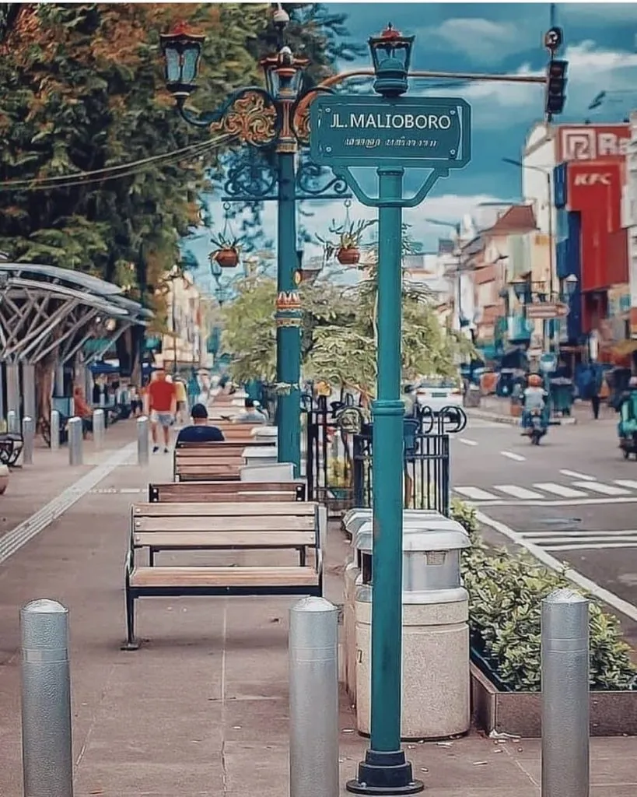
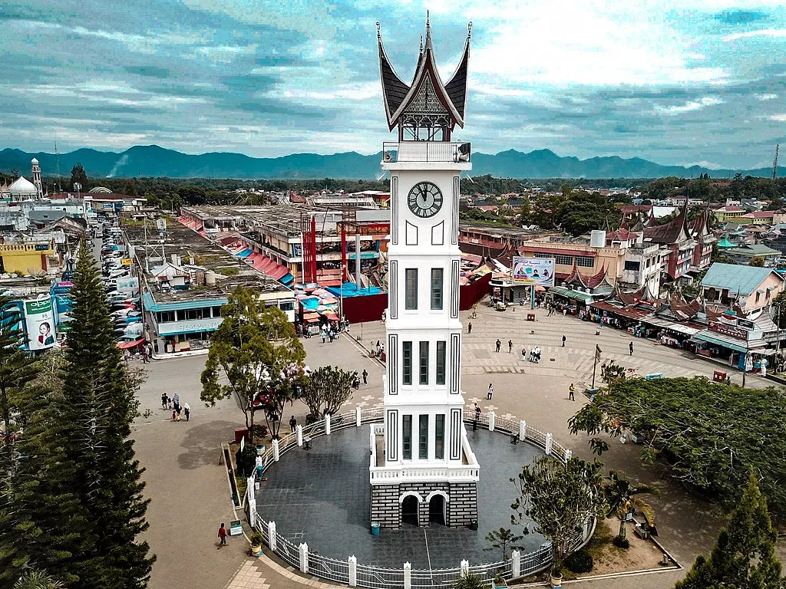
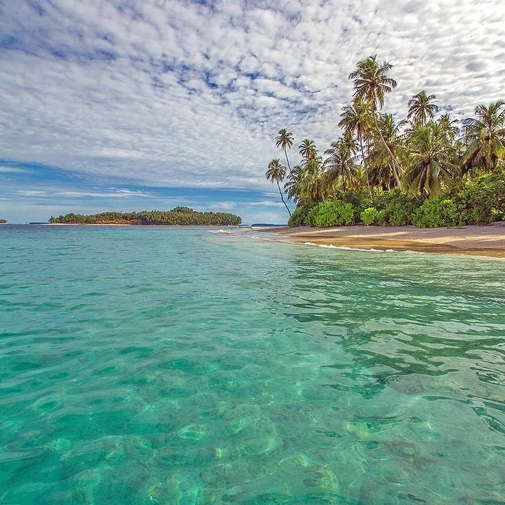

Selamat datang di situs Indonesian Tourism, tempat untuk menemukan keindahan dan keberagaman budaya serta alam Indonesia

Jelajahi Keberagaman Budaya dan Alam Indonesia
Temukan Pesona yang Tidak Terlupakan di Setiap Sudut Nusantara Mari Menggali Kebudayaan Etnik yang Kaya Melalui Tarian, Upacara, dan Tradisi yang Memikat Nikmati Keindahan Alam Indonesia yang Luar Biasa, dari Pantai-Pantai Memikat hingga Puncak Gunung yang Menantang Pilih Pengalaman Menginap yang Tak Terlupakan di Hotel-Hotel Favorit, Siap Melayani Setiap Kebutuhan Anda Kemudahan Transaksi untuk Memastikan Liburan Anda Lebih Mudah dan Praktis Ayo Mulai Petualangan Anda di Indonesia, Di Mana Setiap Sudut Menawarkan Keajaiban yang Tak Terlupakan!.
Kebudayaan Indonesia
1. Upacara Adat Tulude

Upacara adat Tulude merupakan upacara adat tahunan berbentuk hajatan yang berasal dari kepulauan Sangihe, Talaud dan Sitaro. Upacara adat ini adalah hasil dari warisan para leluhur masyarakat setempat sehingga sangatlah sakral.
2. Upacara Adat Pemakaman Waruga

Suku Minahasa memiliki suatu tradisi pemakaman yang unik yang berbeda dari yang lain, yaitu dengan meletakkan posisi jenazah ke arah utara dan di tekuk kaki jenazah sehingga tumit kaki menempel pada pantat, dan kepala mencium lutut.
3. Tradisi Perang Nasi di Ngawi, Perayaan Musim Panen

Di salah satu desa di Ngawi, Jawa Timur dikenal tradisi unik perang nasi. Tradisi ini dilakukan di Desa Pelang Lor, Kecamatan Kedunggalar, Kabupaten Ngawi, Jawa Timur. Tradisi ini dilaksanakan setelah masa panen kedua di setiap tahunnya.
4. Tradisi Unik Menyambut Bulan Ramadan ,Nyadran, Jawa Tengah
Nyadran merupakan tradisi yang penting bagi masyarakat Jawa Tengah. Pasalnya, tradisi ini dijadikan momentum untuk menghormati leluhur dan ungkapan rasa syukur pada Sang Pencipta. Tradisi yang dilakukan dengan serangkaian kegiatan, dari mulai membersihkan makam keluarga, membawa sadranan atau makanan hasil bumi, lalu makan bersama (kenduri) ini diadakan satu bulan sebelum dimulainya puasa. Nyadran kerap kali dilaksanakan oleh masyarakat Jawa Tengah yang berada di daerah Magelang, Temanggung, dan Kendal.
5. Tarian Cokek (Betawi, DKI Jakarta)

Tari cokek adalah tarian akulturasi antara budaya Betawi, Cina dan Banten. Suku Betawi yang tinggal di sekitar Jakarta atau ibukota dari Indonesia sejak dulu, sangat mudah untuk berinteraksi dengan suku atau bangsa lain.
6. Tarian Indang (Sumatera Barat)

Tari Indang atau yang terkenal dengan nama Tari Dindin Badindin merupakan kesenian asli Sumatera Barat, lebih tepatnya masyarakat Pariaman. Tarian ini konon merupakan media proses penyebaran Islam oleh Syekh Burhanudin di Sumatera Barat.
Tempat Wisata Terbaik di Indonesia
1. Derawan Kalimantan Timur

Tidak berlebihan kalau menyebut Kepulauan Derawan sebagai surga destinasi liburan di daerah tropis. Beragam aktivitas menyenangkan bisa kamu lakukan saat berada di Derawan. Mulai dari diving di taman laut Derawan, berenang bersama ribuan ubur-ubur di Danau Kakaban, snorkeling di laguna tersembunyi Kehe Daing, menjelajahi Goa Haji Mangku, hingga terlibat konservasi penyu di Pulau Sangalaki.
2. Gunung Ijen, Jawa Timur

Dilabeli sebagai negara cincin api, beberapa wilayah di Indonesia memiliki gunung api yang aktif maupun tidak aktif. Banyak di antara gunung api tersebut justru menjadi spot berlibur, seperti Gunung Ijen di ujung timur pulau Jawa.
3. Daerah Istimewa Yogyakarta

Jogja selalu punya spot istimewa untuk dikunjungi. Salah satunya ialah Kabupaten Sleman dengan sederet candi kuno yang klasik sekaligus mengagumkan. Saat berlibur ke Jogja, sempatkan waktu untuk menjelajahi Candi Prambanan, candi Hindu terbesar di Nusantara.
4. Bukittinggi, Sumatera Barat

Seusai berlibur di Pulau Nias, kamu bisa melanjutkan wisata di Bukittinggi. Daerah ini merupakan kota terbesar kedua di Provinsi Sumatera Barat dengan diapit oleh Gunung Merapi dan Gunung Singgalang.
5. Nias, Sumatera Utara

Destinasi ini berada di sebuah pulau kecil di sebelah barat daratan Provinsi Sumatera Utara. Pulau Nias memiliki beragam objek wisata yang tidak boleh dilewatkan pada tahun ini. Mulai dari pantai eksotis, danau memesona, hingga desa adat dengan budaya memikat tersedia di pulau ini.
Daftar Hotel Favorit

Hotel A
Fasilitas: Kolam renang, spa.
Harga: Mulai dari Rp XXX.
Alamat: Jl. XXX.

Hotel B
Fasilitas: Restoran, akses pantai.
Harga: Mulai dari Rp XXX.
Alamat: Jl. YYY.
Transaksi
Fasilitas untuk melakukan transaksi seperti pemesanan hotel, tiket wisata, atau transportasi.